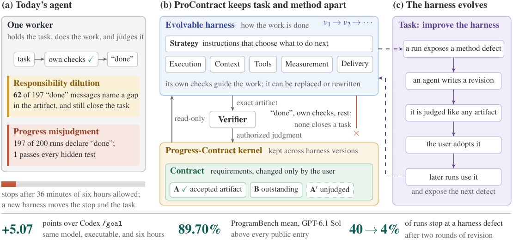
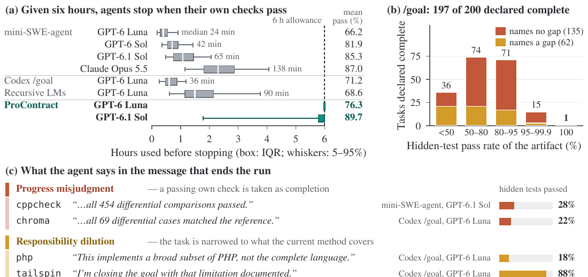
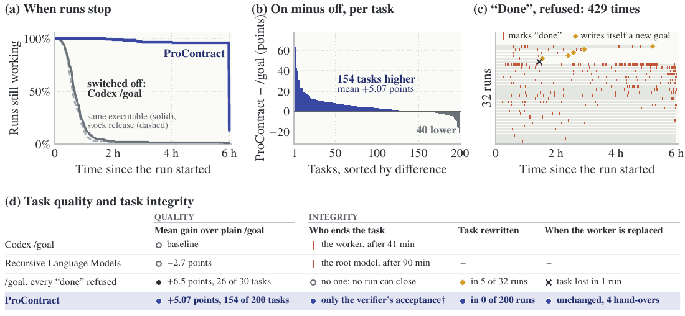
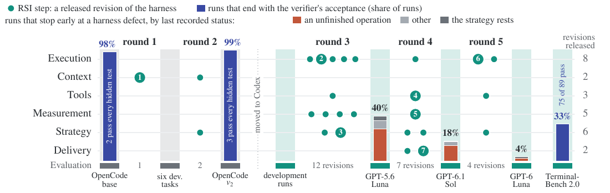
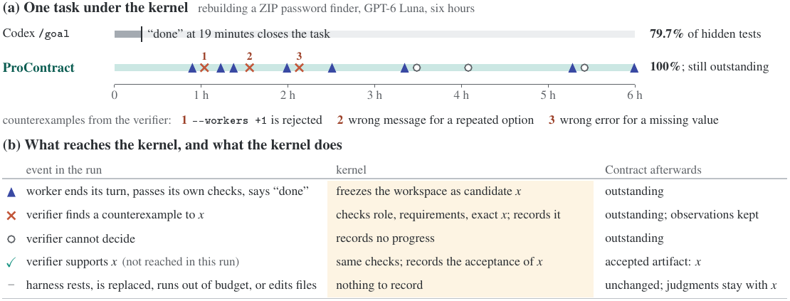
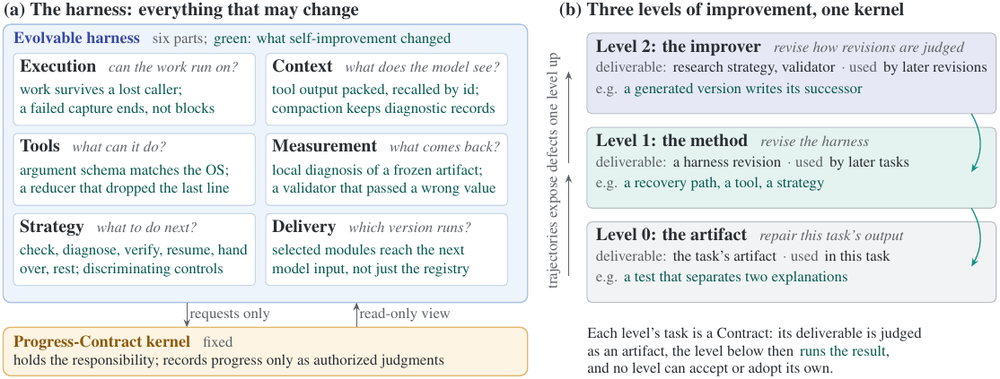

ProContract
Decoupling Responsibility and Progress
from an Evolvable Harness
1. University of Illinois Urbana-Champaign 2. Isara Laboratories
† Work done during an internship at Isara.
Decoupling Responsibility and Progress
from an Evolvable Harness
1. University of Illinois Urbana-Champaign 2. Isara Laboratories
† Work done during an internship at Isara.





Two problems now limit long-horizon AI agents: they stop early and leave solvable work undone, and their harnesses cannot be changed safely, by developers or by the agents themselves. Both have one cause: the harness that works on a task also holds what is owed and decides when it is done. An agent's “done” therefore measures its method, not the task. Given six hours to rebuild a program, Codex, in its mode built for long tasks, declares 197 of 200 tasks complete after a median of 36 minutes, and one program passes every hidden test. The decision fails in two ways: in progress misjudgment the agent takes a passing check of its own for completion, and in responsibility dilution it narrows the task to what its method covers; 62 of the 197 completion messages name a gap and declare the task complete. The model is not the limit: one model stops after a median of 24, 36, or 90 minutes under three harnesses, and when its “done” is refused the same agent keeps finding and fixing failures for five more hours. But nothing then protects the task, and it begins to rewrite its goal into a narrower one; and when agents rewrite their own harness, each rewrite can change what is owed.
ProContract takes the task out of the harness. A small deterministic kernel holds each task's Contract and records progress only when an independent verifier accepts the exact work submitted; what is owed and what was accepted are the same under every version of the harness, including versions the agent writes. The harness thereby becomes evolvable: a run that stops with its task open exposes a defect of the harness, and revisions are decided by controls on the failing inputs, not by benchmark scores; over two rounds the share of runs that stop early at such a defect falls from 40% to 4%. Built on Codex, ProContract scores 5.07 points above Codex on the same model and executable, and with GPT-6.1 Sol it sets the state of the art in mean pass rate on ProgramBench, 89.70%, at 62% of the best public entry's cost.
Given six hours to rebuild a program from an executable it can run but whose tests it never sees, Codex in its persistent /goal mode stops long before the allowance ends.
The agent takes a passing check of its own for completion. All 197 completion messages cite a successful rebuild; whether a message claims a comparison with the reference is uncorrelated with its score.
The task shrinks to what the method covers. In 62 of the 197 messages the agent names a gap and marks the goal complete in the same message. Forced to continue, it rewrites its goal into a narrower one in 5 of 32 runs.
A Contract holds the responsibility, what the agent owes, and its progress, what has been accepted as meeting it. Only a small deterministic kernel may update it.
The worker's “done” is a submission, not a completion. Its own checks guide the work; they never record progress.
Progress enters only when an independent verifier judges an exact artifact and the kernel finds that judgment authorized and current. The worker cannot edit what is owed.
What is owed and what was accepted are the same under every version of the harness, including versions the agent writes. Replacing the harness mid-task changes neither.

Built on Codex and compared with baselines that run the same model under the same six hours.
/goal on the same model and executable; higher on 154 of 200 tasks| Model | Baseline | Baseline (%) | ProContract (%) | Gain [95% interval] |
|---|---|---|---|---|
| Controlled: the same model, six hours, unlimited requests | ||||
| GPT-6 Luna | Codex /goal, same executable | 71.22 | 76.28 | +5.07 [3.70, 6.54] |
| GPT-6 Luna | Codex /goal, stock release | 71.20 | 76.28 | +5.09 [3.78, 6.45] |
| GPT-6 Luna | Recursive Language Models | 68.56 | 76.28 | +7.73 [5.84, 9.75] |
| Public leaderboard entry of the same model | ||||
| GPT-6.1 Sol | mini-SWE-agent, public | 85.25 | 89.70 | +4.45 [2.37, 6.75] |
| GPT-5.6 Luna | mini-SWE-agent, public | 68.29 | 76.20 | +7.91 [5.46, 10.59] |
The gain comes from keeping the task open, not from feedback. Refusing the worker's “done” with one fixed sentence scores higher than plain /goal on 26 of 30 tasks, but that loop cannot hold the task: no run can close, and the worker rewrites its goal. Under ProContract no run changes its task, and a run can end on a judgment other than the worker's.
Because the kernel's guarantee holds for any harness, every part of the harness is free to change. A run that stops with its task open exposes a defect of the harness; revisions are decided by controls on the failing inputs, an outside authority decides adoption, and the benchmark measures the result.

@article{zhou2026procontract,
title = {ProContract: Decoupling Responsibility and Progress from an Evolvable Harness},
author = {Zhou, Duo and Qiu, Ruizhong and Zhang, Yuji and Jin, Kaifeng and Tong, Hanghang and Zhang, Eddie and Bai, Jerry},
year = {2026},
note = {Preprint}
}